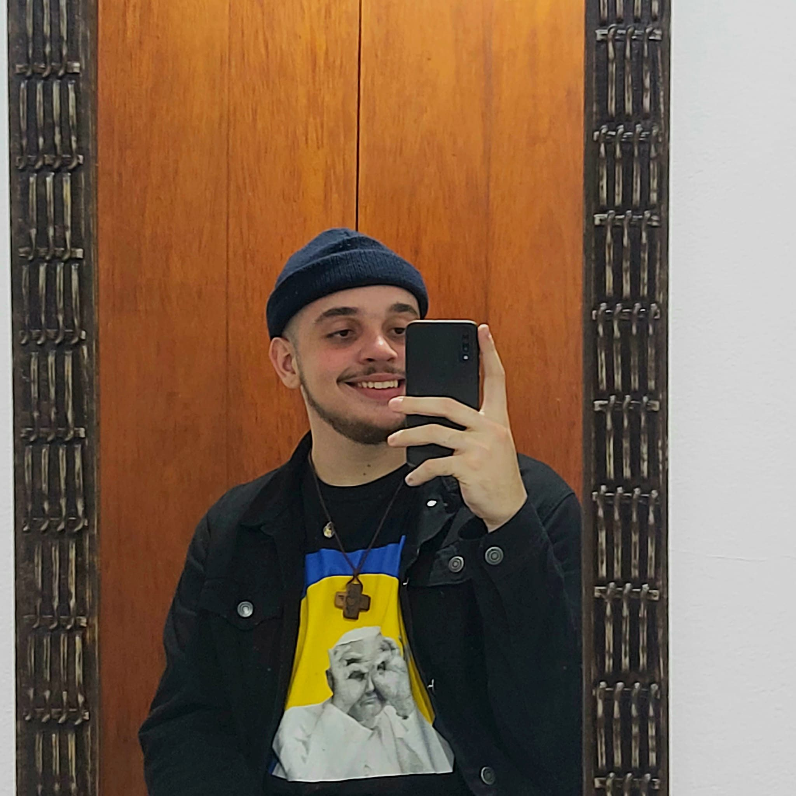

João dos Santos Cardoso de Jesus
E-mail: joaodigitalscj@hotmail.com
Telefone: (11) 99573-6879
19, Suzano - SP

• Quem eu sou:
- Estudante do 3⁰ semestre de Ciência da computação da Universidade Anhembi Morumbi, cursei inglês até o módulo upper intermediate 2 (intermediário avançado 2) na escola de idiomas Cultura Inglesa e atualmente estou cursando a trilha Fundamentar do programa Discover na plataforma Rocketseat; atualmente estou em busca de uma primeira experiência de trabalho e de expandir meu aprendizado na área de tecnologia.
• Objetivo:
- Conquistar minha primeira vaga como estagiário na área de tecnologia, aprimorar meus conhecimentos técnicos e desenvolver mais as minhas Soft Skills no ambiente de trabalho.
• Formações:
- 2019-21: Ensino médio no Colégio Objetivo Tatuapé.
- 2022: Curso de inglês até o nível Upper Intermidiate 2 (Intermediário avançado 2) na escola Cultura.
- 2022 - Presente: Cursando Ciência da Computação na Universidade Anhembi Morumbi.
- 2023 - Presente: Cursando o módulo Discover na plataforma de cursos de programação Rocketseat.
• Competências:
- HTML 5
- CSS 3
- Javascript básico
- Java básico/ intermediário
- Inglês intermediário/ avançado
- Espanhol básico
- Pacote Office básico
- Proatividade
• Interesses profissionais:
- Adquirir novos conhecimentos e experiências na prática, melhorar minha comunicação corporativa, aprimorar meu conhecimento técnico crescer junto da empresa e conquistar minha liberdade financeira realizando o que eu amo.